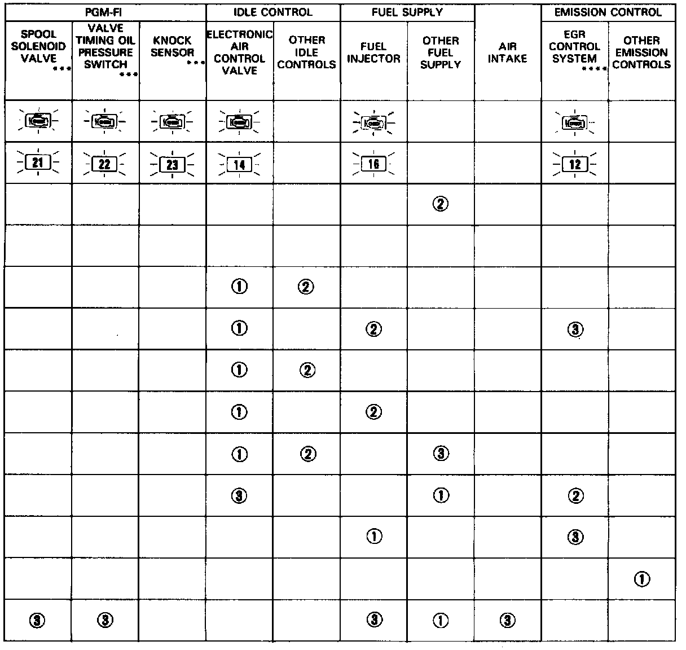

Symptom Troubleshooting Index


SYMPTOM-TO-SYSTEM CHART
NOTE: Across each row in the chart, the systems that could be sources of a symptom are ranked in the order they should be inspected starting with (1). Find the symptom in the left column, read across to the most likely source, then refer to the system or component listed at the top of that column. If inspection shows the system is OK, try the next most likely system (2), etc.
* If codes other than those listed above are indicated, count the number of blinks again. If the indicator is in fact blinking these codes, replace the original ECU.
(BU) If the Check Engine light is on while the engine is running, jump the service check connector. If no code is displayed (Check Engine light stays on steady), the back-up system may be in operation.
** Check Engine light
*** B17A1 engine
**** B18B1 engine (A/T)